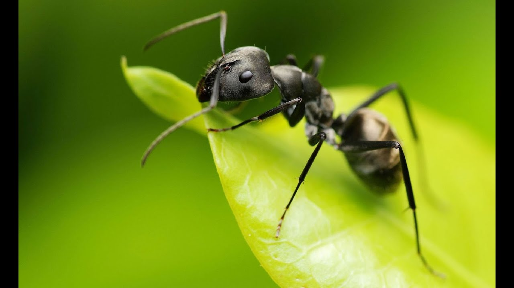
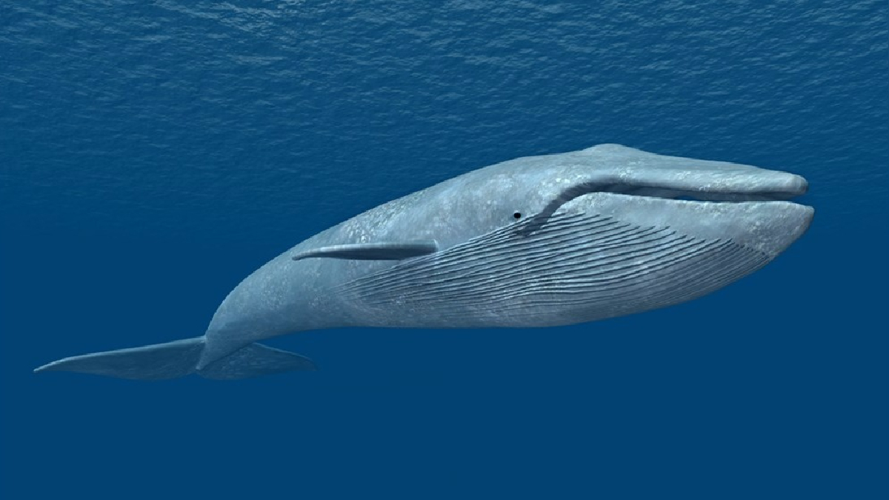

Las hormigas pueden almacenar agua

Cierta variedad de hormigas puede hacer crecer su vientre hasta un centímetro para almacenar una mezcla de agua y azúcar, llamada néctar, que les sirve de alimento. Cuando les falta agua, el resto de las hormigas recurre a sus compañeras para tomar el líquido vital.
Las jirafas no emiten ningún sonido
Los perros ladran, los gatos maúllan y los pájaros pían. ¿Qué hacen las jirafas? Un grupo de investigadores austriacos, armados con más de mil horas de grabación de sonidos en zoológicos se dio a la tarea de responder a esta pregunta y la respuesta es: nada. Las jirafas no emiten sonido alguno convirtiéndose de esta manera en el único mamífero con esta característica.
Las ballezas azules las mas grandes del mundo

Una ballena azul puede medir hasta 33 metros de largo y algunas de sus arterias son tan anchas que un bebé podría gatear ahí
Las pulgas pueden saltas mas de 20 veces su longitud
Sabes que la pulga puede saltar una distancia equivalente a 30 veces la longitud de su cuerpo
Los delfines saltan grandes longitudes
Los delfines también saltan mucho. Éstos pueden dar saltos hasta 90 metros de alto y 10 de largo por encima del agua.
Los elefantes no saltan ???
Los elefantes es el único animal que no pueden saltar.
Los cocodrilos no sacan la lengua
Los cocodrilos no pueden sacar la lengua.
Los camellos como se protegen de la tierra
Los camellos cuentan con tres párpados para protegerse de las tormentas de arena.